Single and Multiple Variable Regression Modeler Tool
Elevate your data analysis capabilities by transforming complex datasets into clear, actionable insights. This Python-based tool streamlines regression analysis with intuitive features, advanced algorithms, and comprehensive metrics, making model selection effortless for analysts and data enthusiasts at any skill level.
Value Proposition
This Python module provides a seamless solution for regression analysis, empowering users to effortlessly perform both simple and multiple variable regressions. With built-in model comparisons, assumption checks, and advanced metrics, it ensures optimal model selection to support data-driven decisions. Whether you're analyzing trends, testing hypotheses, or refining predictive models, this tool simplifies complex statistical processes, enabling you to model data with ease.
Features
Top-Down Analysis
Explore your portfolio with interactive, multi-level charts, from markets to individual stocks, with real-time performance data.
Performance
Monitor key metrics such as alpha, beta, VaR, CVaR and Volatility with a focus on identifying potential red flags in your investments.
Efficient Frontier
Optimize investments using the Markowitz model and Monte Carlo simulations to maximize returns and minimize risk.
Real Time Insights
Stay updated with stock news, top daily gainers, and most active stocks, directly in your dashboard.
Stock Evaluation
Assess individual stocks with trend identification and essential financial metrics to gauge investment potential.
Customized Views
Easily adjust markets and timeframes to tailor your portfolio experience to your specific investment strategy.
Single Variable Regression Models
Technologies Implemented
Python
The core programming language used to develop the module, with internal libraries such as math for specific operations and itertools for combinatorial calculations.
Pandas
Used for manipulating and visualizing DataFrames and Pandas Series, facilitating efficient data handling and processing.
Scipy
Employed to conduct hypothesis testing and determine distribution values at specified confidence levels, enhancing statistical analysis capabilities.
Numpy
Essential for working with matrices and arrays, enabling efficient numerical computations and operations on large datasets.
Plotly

Used for creating interactive, visually appealing plots and graphs, allowing for better data exploration and presentation.
Module Charts
QQ Plot
Residuals vs. Frequence
Versus Fit
Versus Order
Correlation Heatmap
Y vs Ŷ
How can you use it?
To use this regression analysis tool, follow these steps:
1
Install the Required Libraries. Use the following command in your terminal to install the necessary libraries:
pip install pandas plotly numpy scipy statsmodels
2
Copy and Paste the Code. Run the following code in your Python environment to download and load the module:
# Importing necessary libraries. import importlib.util import requests moduleLink = "https://raw.githubusercontent.com/PPuertos/Regression-Modeling/main/reg_lin_sim_mod.py" # Download and load the Python file as a module response_py = requests.get(moduleLink) module_name = "reg_lin_sim_mod" spec = importlib.util.spec_from_loader(module_name, loader=None) module = importlib.util.module_from_spec(spec) exec(response_py.text, module.__dict__) # MODULES # Multiple Variable Correlation Functions Module mc = module.webAppCorrMultiple # Multiple Variables Regression Modeler Module mrm = module.webAppRegMultiple # Single Variable Regression Modeler Module srm = module.webAppRegSimple # Single Variable Correlation Functions Module sc = module.webAppCorrSimple
Once these steps are completed, you’ll be able to use the modules to perform comprehensive regression analyses, compare models, check assumptions, and generate insightful visualizations, all within an intuitive Python environment.
Further Reading
Read my Article
For a deeper understanding of the application and procedure when selecting the best regression model, I highly recommend reading my detailed article on the topic. It provides insights into the process of model selection, explains the key steps in regression analysis, and guides you through the decision-making process for choosing the most suitable model for your data.
View Github
If you're interested in exploring the code behind the module and seeing its application, feel free to visit the project's GitHub repository. The code and implementation details are available for further exploration